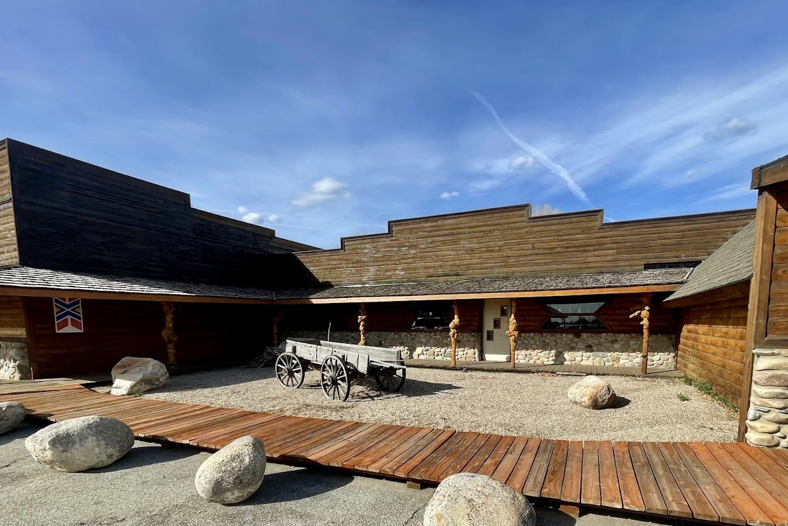
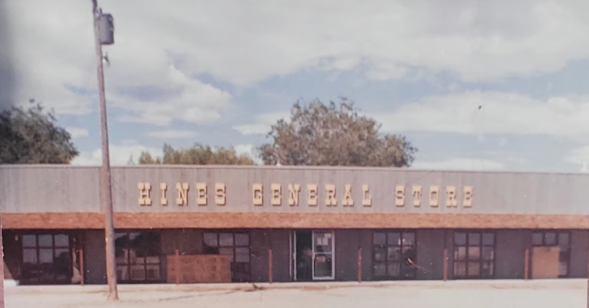
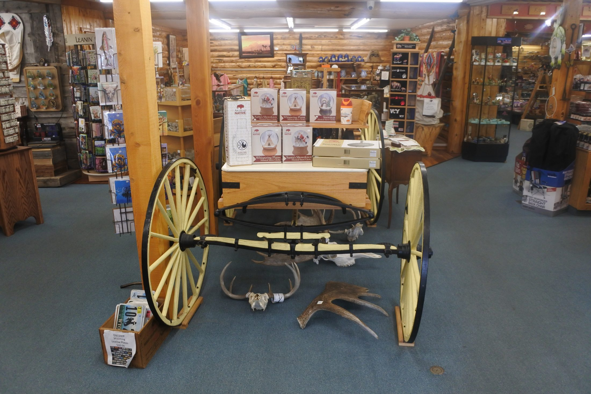
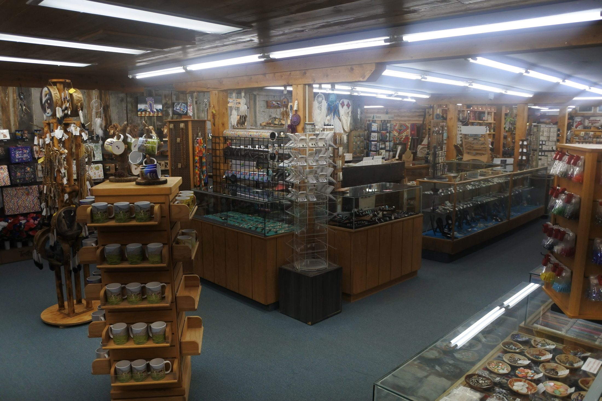

Paul and Peg Hines
Paul and Marjorie "Peg" Hines purchase Hines General Store after World War II.

Store history
Wind River Trading Company grew out of Hines General Store, opened by the Hines family in Fort Washakie in 1946. The building and name have changed, but the business is still tied to the same place.


Store history
Paul and Peg Hines bought Hines General Store after World War II. The original store served Fort Washakie and the Wind River Reservation for decades. In 1978, Wind River Trading Company grew beside it, giving the business more room for goods, displays, and the kind of browsing people still come in for.
The two buildings tell the story better than a long explanation: one started the business, and the other shows what it became.
Paul and Marjorie "Peg" Hines purchase Hines General Store after World War II.
The trading company grows beside the original general store, giving the business more room.
The store remains a working part of Fort Washakie and a local employer.
Why it still matters
General stores had to be practical. People needed supplies, clothing, gifts, fabric, and things for daily use.
Wind River Trading Company still keeps that mix. Some shelves are for everyday needs. Some are for handmade work, Pendleton, jewelry, beadwork, and pieces people want to take time with.


What it is today
The store carries Pendleton blankets and towels, Native-made jewelry and beadwork, fabric by the yard, beading supplies, apparel, gifts, artwork, antiques, and practical goods.
The Gallery of the Wind & Museum is inside the building, so a visit can be part shopping, part history, and part looking around.
Next step
Come by for the full trading-post floor and the gallery. The contact page has hours, directions, and the phone number. Shop online when you want to see what is available before you come in.